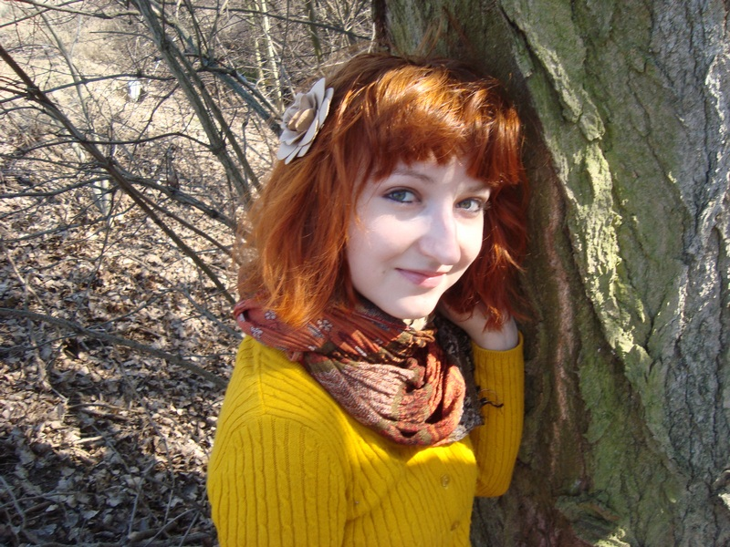
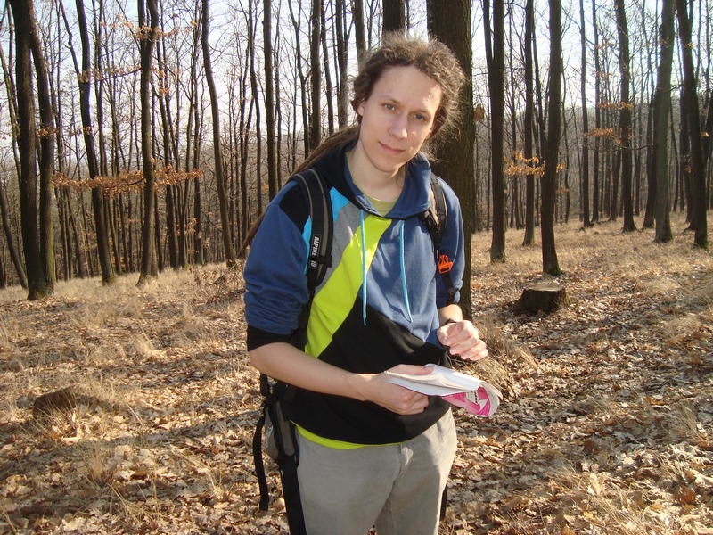
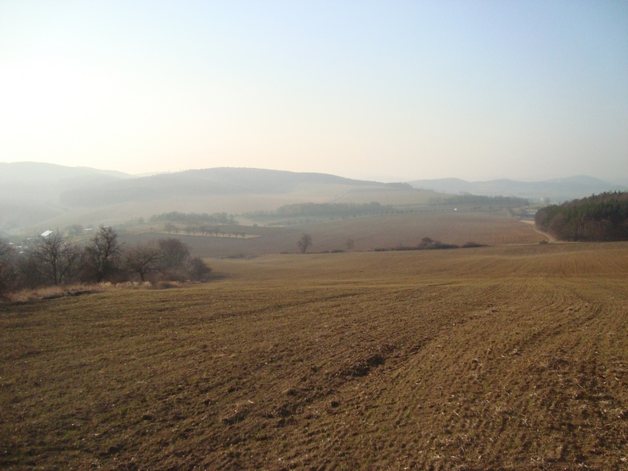
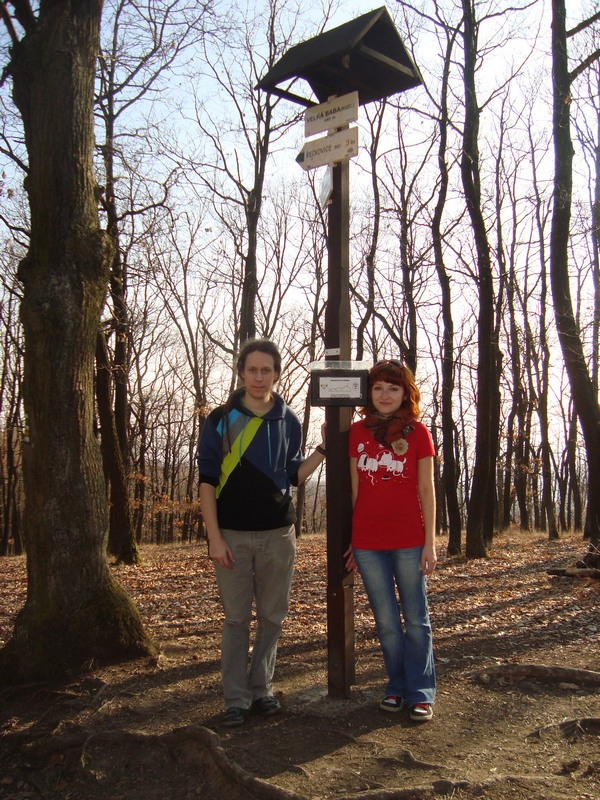

Uplynulý víkend byl jedno velké překvapení! Nejen že k nám konečně přišlo jaro - ono se snad na chvíli zastavilo i léto :D! Nevyužít tak nádherný den k výletu by byl hřích. A protože jsem to ráno obdržela e-mailem i docela pozitivní referenci od své vedoucí, mohla jsem starosti s diplomkou na chvíli hodit za hlavu a vyrazit konečně taky někam na vzduch :-). Péťa vymyslel výlet na Babu, což je brněnská oblast, kterou jsem ještě nikdy nenavštívila. Cestou do Ivanovic, výchozího bodu našeho výletu, jsme stihli spoustu věcí. Odnést nějaké staré oblečení na charitu (ne, na Cejlu to opravdu není krásný ani na jaře ve slunečné sobotní ráno 8-)), koupit v KrPoli nový barevný koberec do obýváku (nechte ho tam, když byl s 80ti%ní slevou :D) a naobědvat se v Globusu. Posilněni jsme konečně mohli vyrazit vstříc Babě :D. Nejprve jsme ale samozřejmě museli odlovit jednu kešku u Globusu. Nebyla na dvakrát přívětivém místě - tedy onen potůček by jistě vypadal poeticky, kdyby z něj lidi odhazováním odpadků nedělali smetiště. Keška ale byla tak rozkošně důmyslně schovaná, že nám všechny útrapy vynahradila. A my mohli konečně pokračovat směrem ven z civilizace.

U první kešky
Za městem jsem pomalu začala sundávat vrstvy, které jsem si na sebe oblíkla v pochybnostech, jestli se teploty opravdu vyšplhají na slibovanou dvacítku. Vyšplhaly. A já litovala, že jsem si nevzala kraťasy (ale jen odpoledne, večer už ani ne :D). Příroda byla ještě taková neprobuzená a nefotogenická, takže jsem udělala jenom pár snímků, které ale stejně vůbec nevystihují, jak bylo teplo a vůbec krásně :-)!

Celou dobu jsem doufala, že když jdeme do kopce, vyloupne se před námi někde alespoň pěkný výhled na Brno. A ono nic. Na druhou stranu nám přes cestu přeběhlo stádo mladých srnek a to se taky nestává každý den :D.

Odlovili jsme ten den dohromady 5 kešek a ušli téměř 13 kilometrů… no taky jsme domů došli pěkně vyřízení :D. Poslední kešky jsme se s radostí vzdali, když jsme viděli, že bysme se pro ni museli drápat do dalšího kopce, kterému jsme se jinak mohli vyhnout O:-).

Péťa loguje kešku
Náš výlet skončil v Bystrci u zoologické zahrady, kde jsme se nechali naložit do nacpané šaliny (ten den se bylo vyvenčit asi celé Brno :D) a odvézt až do Alberta.

Ještě zimní příroda
Pěkně jsme se zrušili, ale lahváček, nezdravá večeře, horká vana a Alpa na bolavý nohy to vždycky jistí, že :D… tak výletům zdar. Tímto vyhlašuji toulací sezónu 2012 za úspěšně zahájenou :-)!!!

“Vrcholovka” s Babou :D